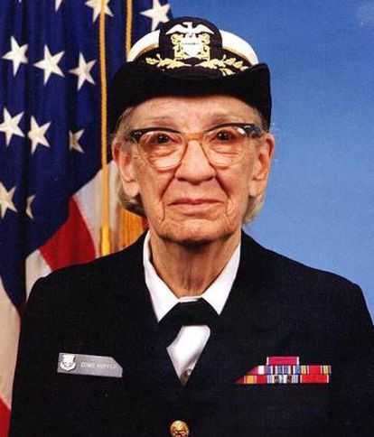

Grace Hopper é considerada a mãe da programação de computadores. Criou a Linguagem Comum Orientada para Negócios (COBOL, na sigla em inglês), a primeira linguagem complexa de computador, que é utilizada até hoje por empresas de todo o mundo. Esta norte-americana obteve um doutorado em Matemática por Yale em 1934 e, quando os EUA entraram na Segunda Guerra Mundial, abandonou seu trabalho de professora de matemática e ingressou na Marinha, onde chegou à patente de contra-almirante.
A Marinha a enviou à Universidade Harvard, onde trabalhou como programadora do primeiro computador de grande capacidade, o Mark I. Quando o viu, pensou: “Caramba, é o aparelho mais bonito que vi até hoje”. Depois da guerra, produziu o primeiro compilador para processamento de dados que usava ordens em inglês; sem saber, Hopper estava abrindo caminho para tornar mais fácil a codificação. Mas primeiro, precisaria convencer seus pares de que aquelas máquinas utilizadas até então para calcular poderiam entender e compilar dados, utilizando uma linguagem mais próxima da humana.
Também ficou conhecida por ter batizado o primeiro bug de computador da história. Uma mariposa ficou presa em um relé do computador Mark II, e foi ela quem chamou o ato de remover o inseto de debugging (que virou debugar, em português).
Em 1986 se aposentou da Marinha em caráter definitivo, sendo naquele momento sua oficial mais idosa. Depois, continuou dando conferências, atuou como consultora e participou de programas educacionais até 1992, quando morreu aos 85 anos. Foi a segunda mulher homenageada com um navio, o USS Hopper, um destroyer ainda em atividade. O lema do navio é "aude et effice - ouse e faça".
Em 1986 se aposentou da Marinha em caráter definitivo, sendo naquele momento sua oficial mais idosa. Depois, continuou dando conferências, atuou como consultora e participou de programas educacionais até 1992, quando morreu aos 85 anos. Foi a segunda mulher homenageada com um navio, o USS Hopper, um destroyer ainda em atividade. O lema do navio é "aude et effice - ouse e faça".
“Se é uma boa ideia, prossiga e leve-a adiante. É muito mais fácil pedir desculpas do que conseguir a permissão necessária.”